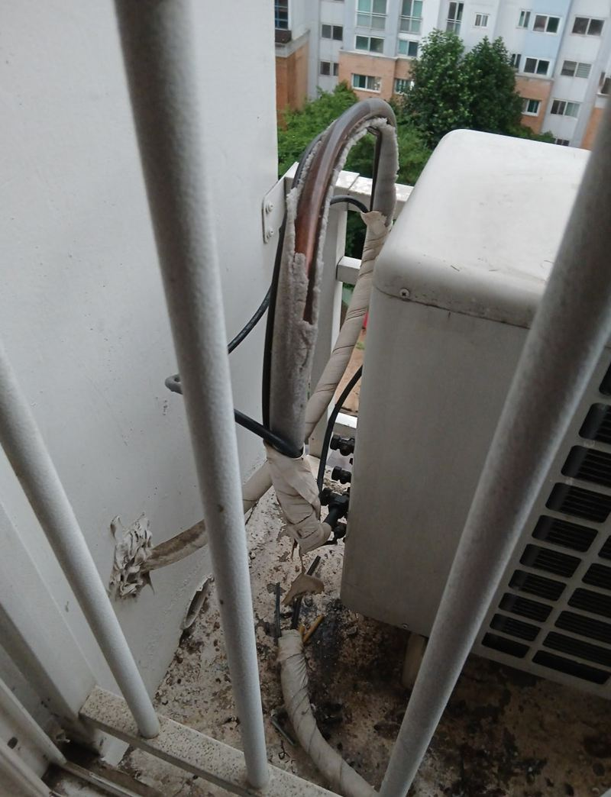
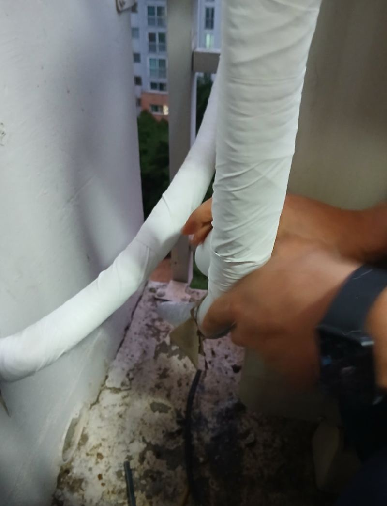
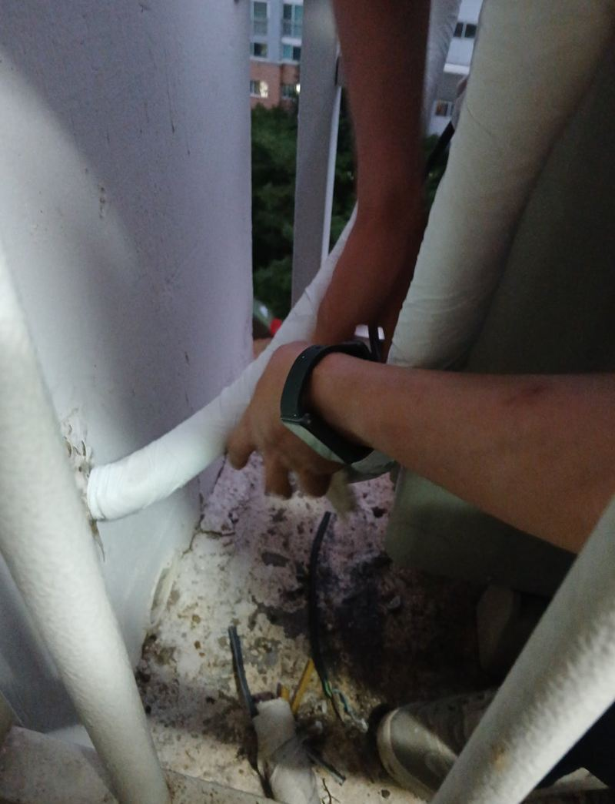
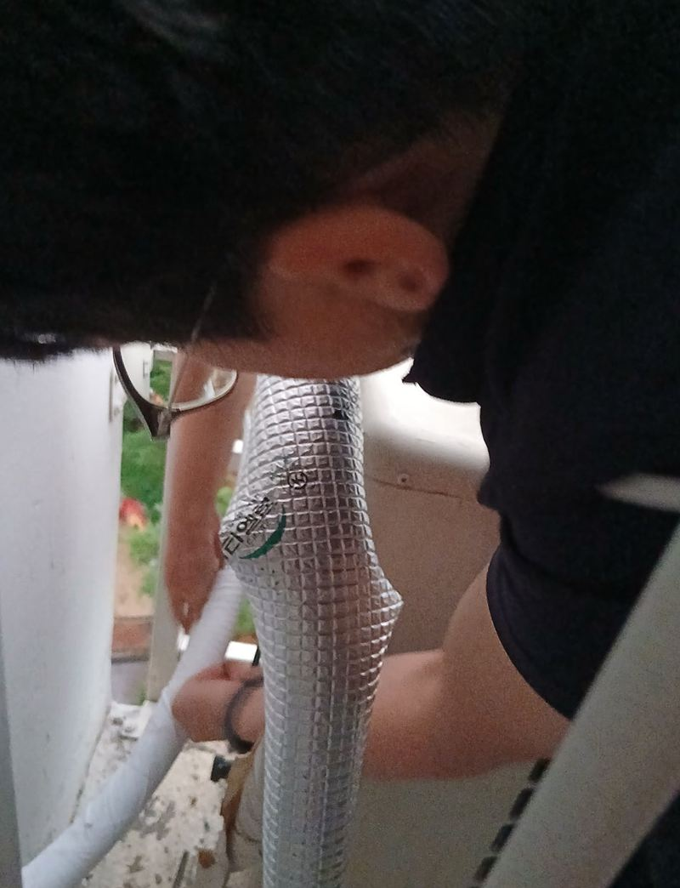
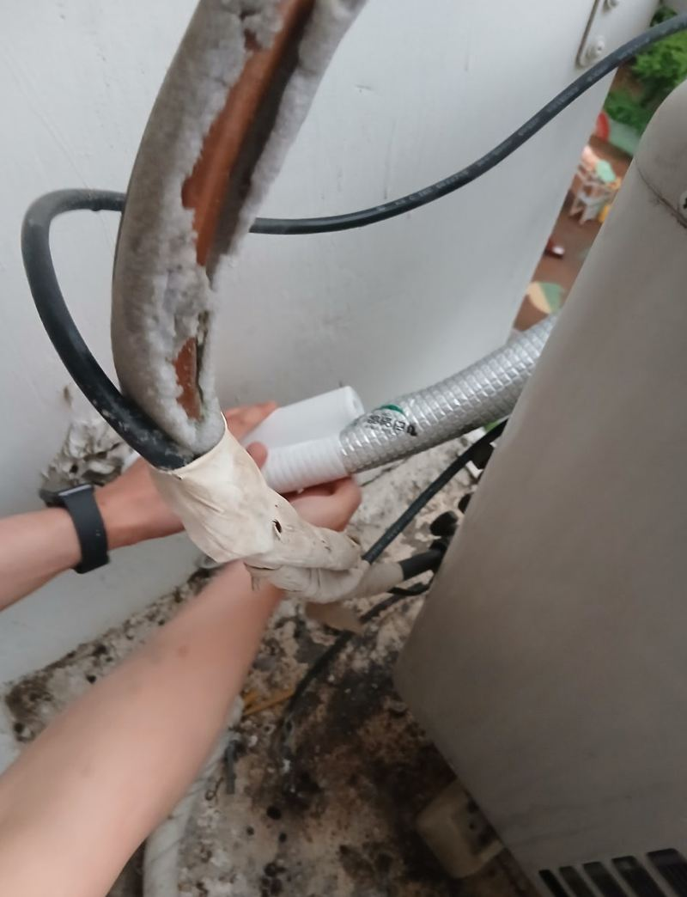
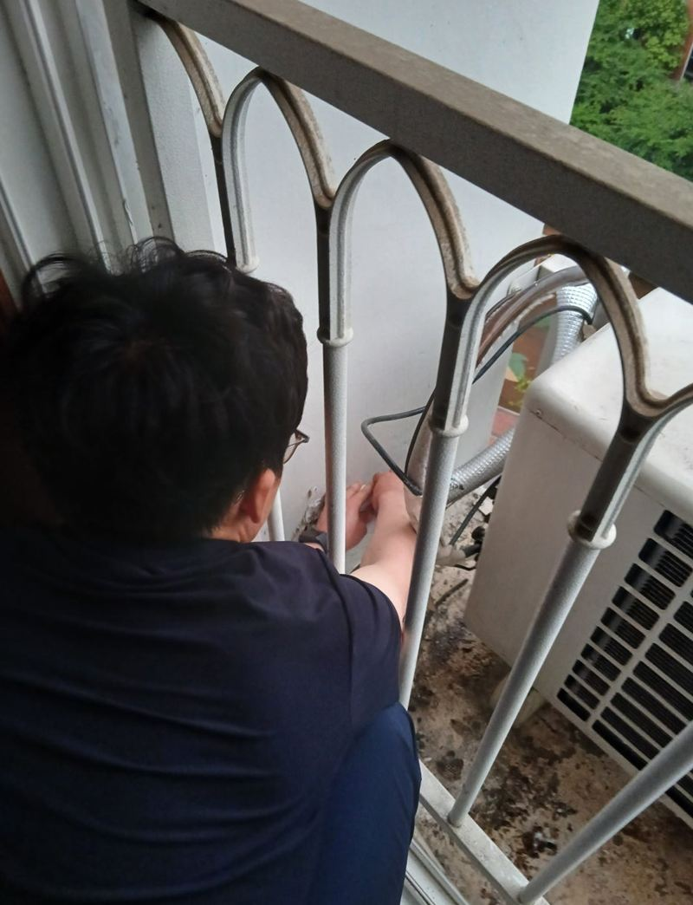

용인 기흥 실외기 배관·전선 노출 정리 방법
← 밀어서 전후 비교 →
"에어컨은 잘 나오는데, 실외기 배관 테이프가 다 벗겨져서 전선이 보여요. 위험하진 않을까요?" 용인 기흥 동백 아파트였어요. 실외기는 난간 바깥, 외벽 아래쪽 받침에 놓여 있어 햇빛과 비바람을 그대로 맞았어요. 테이프는 너덜너덜했고 일부는 안쪽 단열재까지 상해 있었어요. 안전 장비를 갖추고 난간 너머로 내려가, 상한 단열재를 보강한 뒤 테이프를 5~6번 겹쳐 감아 다시 감쌌어요.
| 현장 | 용인 기흥구 동백 아파트, 외벽 아래 실외기 받침 |
|---|---|
| 증상 | 배관 테이프 벗겨짐, 전선 노출, 단열재 일부 훼손 |
| 한 일 | 안전 장비 착용 → 상태 확인 → 벗겨진 테이프 정리 → 단열재 보강 → 5~6겹 재테이핑 → 전선 보호 확인 |
| 조건 | 난간을 넘어 외벽 쪽으로 접근해야 하는 위치 |
테이프가 벗겨지면 생기는 문제
- 누전·감전피복이 드러난 전선이 비와 습기를 맞으면 누전 위험이 커져요.
- 냉방 효율배관 단열이 벗겨지면 오가는 냉기가 새서 에어컨이 더 오래 돌아요. 전기요금으로 이어져요.
- 배관 손상바로 냉매가 새진 않지만, 맨 배관이 충격과 날씨에 계속 노출되면 손상 원인이 돼요.
- 외관너덜너덜한 테이프는 외벽 쪽에서 눈에 띄어요.


노출된 배관 다시 감싸는 과정
상태 확인
테이프만 벗겨진 곳과 단열재까지 상한 곳을 나눠 봤어요.
단열재 보강
상한 단열재는 보강해서 배관을 다시 덮었어요. 테이프만 감으면 안쪽이 비어 단열이 안 돼요.


겹쳐 감기
테이프를 5~6번 이상 겹쳐 감아 햇빛과 비에 오래 버티게 했어요. 아래에서 위로 겹쳐 감아야 빗물이 틈으로 들지 않아요.

전선 확인
전선이 드러난 곳 없이 감싸졌는지, 끝부분이 들뜨지 않았는지 확인했어요.

실외기 위치에 따라 달라지는 작업
| 위치 | 작업 방식 |
|---|---|
| 베란다 안 | 손이 쉽게 닿아 일반 테이핑 |
| 외벽 받침·난간 밖 | 안전 장비, 사다리 등 필요 |
| 옥상 | 열과 바람이 강해 더 촘촘한 보강 |
테이프 색이 바래고 끝이 들뜨기 시작하면 다시 감을 때예요. 에어컨을 많이 쓰는 여름 전에 봐 두면 좋아요. 고객분은 "전선이 보여 고장 날까 걱정했는데 단단하게 여러 번 감아 줘서 마음이 놓인다"고 하셨어요.
배관 보호, 이렇게 미리 챙겨요
- 여름 오기 전 한 번 보기에어컨을 본격적으로 켜기 전에 테이프가 들떴는지, 전선 피복이 드러났는지 베란다 쪽에서 살펴보세요.
- 새 둥지·벌레 확인배관 틈에 새가 둥지를 틀거나 벌레가 들어가면 단열재가 금방 상해요.
- 받침과 난간 상태외벽 받침이 녹슬었거나 실외기가 기울었다면 배관 정리와 함께 알려 주세요.
- 물 떨어지는 소리배수 호스가 빠져 아랫집 쪽으로 물이 떨어지는 경우도 있어 같이 확인해요.
실외기 배관 정리 질문
테이프만 다시 감으면 되나요?
단열재가 멀쩡하면 테이프만으로 돼요. 단열재가 상했다면 보강부터 해요.
직접 감아도 되나요?
베란다 안이라면 가능하지만, 난간 밖이나 외벽은 추락 위험이 있어 맡기시는 게 안전해요.
에어컨 성능이 좋아지나요?
단열이 회복되면 새던 냉기가 줄어 효율에 도움이 돼요.
냉매 보충도 해 주나요?
냉매 문제는 에어컨 전문 업체 점검이 필요해요. 배관 외부 보호를 맡아요.
테이프 색을 고를 수 있나요?
흰색, 회색 등 외벽 색에 맞춰 고를 수 있어요.
배관이 길게 늘어져 있어요.
처진 배관은 고정 새들로 벽에 붙여 정리해요.
얼마나 자주 다시 감아야 하나요?
햇빛을 많이 받는 곳은 몇 년마다 상태를 봐 주세요.
배관 덮개(커버)를 씌울 수도 있나요?
벽을 타고 내려오는 배관은 플라스틱 커버로 덮어 깔끔하게 정리하기도 해요. 실외기 주변 공간을 보고 정해요.
아랫집 실외기 배관도 같이 보이는데요?
세대마다 따로 관리하는 게 보통이에요. 이웃과 함께 하고 싶다면 미리 말씀해 주세요.
비 오는 날에도 하나요?
테이프가 젖으면 잘 붙지 않아 마른 날로 잡아요.
다른 실외기·배관 보온 현장
실외기 위치와 벗겨진 배관을 찍어 보내 주세요.
전화 상담 010-4517-9872